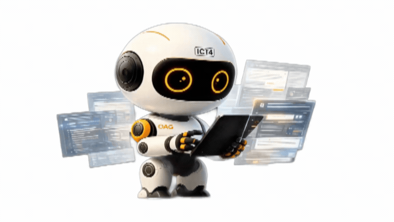

💬ผู้ช่วยระบบการสืบค้นตัวอย่างร่างคำฟ้องคดีอาญา และคำร้องต่างๆ
🎤
ส่ง
🔄 รีเซ็ต
[พิมพ์คำถามด้วยแป้นพิมพ์ หรือไมโครโฟน แล้วกดส่ง]
*** การค้นหาร่างคำฟ้อง : พิมพ์คำถาม เช่น "ร่างคำฟ้องทำร้ายร่างกายผู้อื่นอาการสาหัส" --> ระบบจะแสดงชื่อไฟล์ตัวอย่างร่างคำฟ้องในระบบที่เกี่ยวข้อง